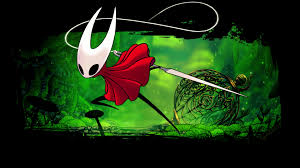

Hollow Knight : Silksong is the sequel to the 2017 Hollow Knight which was released by Team Cherry. The game initially released on Windows in February, and was followed up in April being released on Mac and Linux, and in 2018 it was released on Nintendo Switch, PlayStation 4, and Xbox One. The game also has DLC (Downloadable Content, or additional content after the release) currently being made and is hoped to release in 2026. There are 235 enemies and bosses currently in the game, with more potentially being added in the DLC. There are 32 areas currently in the game, with more being added in the DLCs to come out. The game is broken up into 3 seperate acts, with the third act only being accesible after completing a large amount of quests and wishes, and defeating the final act of Act 2. In the game you play as a familiar face if you've played the first game; Hornet. She was a recurring character in the first game, appearing as a boss in both Greenpath and Kingdom's Edge, and in other places such as City of Tears and Deepnest who talks to you before swinging away on her silk.